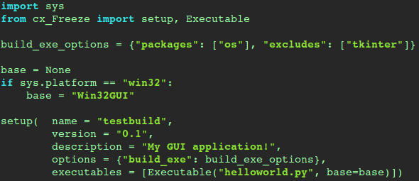

Including Modules and Dependencies using cxfreeze
If you run the command and looked at the output with file manager and a hex editor, you'll find the imported modules were not included. We know that Python applications can span multiple
.py files, and those files can function as modules, but this wouldn't necessarily make an application portable without the third-party modules being present on the target system. One solution is to use cxfreeze. Install
cxfreeze and create a
setup.py script in the project directory.

(The file is also in
the Python repository on GitHub, if you want to copy and paste.)
Then run the following:
$python setup2.py build
This generates a
/build directory containing a compiled application, several
.so modules and a
library.zip - the latter seems to contain bytecode files for the imported modules and dependencies.
References
PYTHON SOFTWARE FOUNDATION. 2017. Python 2.7.13 Documentation. 32.10.
py_compile — Compile Python source files. [WWW].
https://docs.python.org/2/library/py_compile.html. 5th June 2017.
TUININGA, A. 2017.
Welcome to cx_Freeze’s documentation!. [WWW].
https://cx-freeze.readthedocs.io/en/latest/. 5th June 2017.